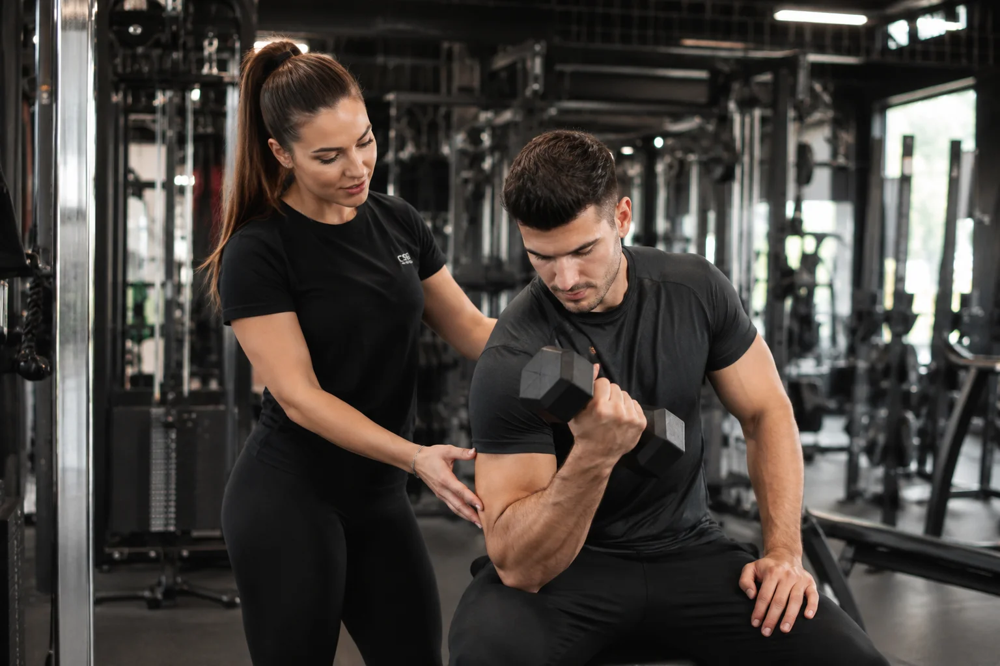

Par Central Web Agency · Mis à jour le

Avant de créer le site d’un coach sportif à Lyon, préparez vos types de séances, les publics accompagnés, les lieux, les forfaits et le moyen de vous contacter. Le visiteur doit pouvoir savoir à qui s’adresse une séance et comment poser une première question.
Faites une fiche pour chaque type de séance
- Prestation. Précisez s’il s’agit de coaching individuel, de préparation physique, d’un cours collectif ou d’un accompagnement à distance.
- Public. Indiquez le niveau, les objectifs de la séance et les prérequis éventuels.
- Organisation. Décrivez la durée, le matériel à prévoir, le lieu et les communes desservies si vous vous déplacez.
- Tarifs du coaching. Expliquez le prix d’une séance ou ce que couvre chaque forfait, avec le nombre de séances et les conditions utiles.
Exemple illustratif. Une page « Coaching individuel à domicile » peut présenter une séance de 60 minutes, le matériel à prévoir, les quartiers réellement desservis et un lien pour échanger sur le besoin.
Montrez votre approche et rendez le contact facile
Présentez votre parcours et vos certifications réelles. Des photos de séances ou des retours de clients publiables aident à comprendre votre approche. Précisez aussi le moyen de contact que vous consultez pour que le visiteur sache par où commencer.
Indiquez les lieux et zones d’intervention dans les pages concernées. Le guide du SEO local explique comment le site et une fiche d’établissement peuvent se compléter.
Quel budget pour créer le site ?
Chez CWA, comptez dès 450 € TTC pour une landing page, 650 € TTC pour un site one-page ou 950 € TTC pour une vitrine multipage. Un site administrable démarre à 2 500 € TTC et se chiffre sur devis, selon les fonctions attendues.
La maintenance facultative, distincte de la création, démarre après livraison à 39 €/mois pour une vitrine ou 99 €/mois pour un site dynamique. Consultez la fiche de création de site pour coach sportif pour préparer un devis gratuit adapté à votre projet.